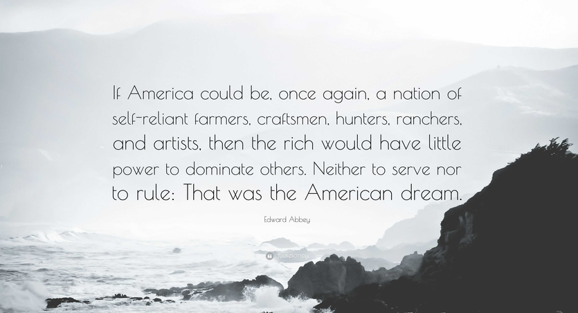

I'm not sugarcoating anything in this post, things are bad, so bad, so so bad.
We have AI cameras (birds like to FLOCK) populating all around and tracking peoples every movement when they have done nothing wrong.
The "Free Internet" is dying with age (ID) verification, which is allegedly to keep us safe. But the people who are enforcing these laws in the government are all accomplices of Epst3in, who not only harmed but killed people on that island of horrors.
People like Elon Musk or Alex Karp or Thiel or Ellison and the rest of the rich keep eating up more and more money through government contracts, tax breaks, and bailouts while everyone else struggles.
And while things are terrible, I don't believe that all hope is gone, there are meaningful things that WE CAN DO!
I hate the surveillance state, but there is a greater method to all of this evil, and it revolves around us knowing about it.
They want us to know that we're being treaded on, and they want us angry.
And we are looking at a situation in which many people are isolated, we all effectively live in pods with how wrapped up in our devices that we all are.
We are constantly served this information that enrages us, it also isolates us. When one feels hate, and alone, they're more likely to lash out at a curel world in which they feel led to their suffering.
This makes us fight with each other instead of the system that has controlled us.
The Russian Revolution, The French Revolution, The rise of Nazi Germany, the list can go on.
All of those movements started off with people hateful, of course they were hateful toward the system. But that raw, viceral hate changed them.
The Russians wanted to overthrow the elites, and they killed millions in the process to install another, more authoritarian system.
The French wanted to overthrow the elites, the next thing you know, they're cutting off the heads of literally everyone! This led to the rise of Napoleon lol.
The Germans were done wrong by the Treaty of Versailles. They were hateful, and then their hate got lost in confusion, and they blamed other groups of people for their suffering which led to one of the largest genocides ever.
So then what must be done?
We need love for our families, and hope for the future to be our motivator for overthrowing this system. The wrath and hate they want us to feel mixed with our isolation will only keep them in power, and a revolution (like so many others) will get hijacked into authoritarianism.
In my honest opinion, I truly believe that the best way to overthrow this system is self sufficiency. Allow me to explain.
We need to come together, and there has been a movement where people have began to exit this system slowly by homesteading. I believe that this is an EXCELLENT start, if we can get groups of people to work with and rely upon each other, we won't need this system that makes the elites have more power than us!
This leads to the most drastic yet effective step.
If everyone were to quit their jobs, the entire system would implode within DAYS.
You don't have people delivering ANYTHING, no more products at the stores, no more methods of transportation, no one to enforce anything.
What are the corporate elites or the other powers that be going to do when no one is paving their roads or bringing their food? That will be the end.
I know that sounds crazy for everyone to just quit their jobs. I feel like the situation going on with the economy and whatnot would have to get so much worse for a large portion of people to truly entertain this idea.
And once that system implodes, many people will have to fend for themselves which is very scary if you're not prepared. But this is the best possible way to PEACEFULLY overthrow an evil system.
Will we see this happen? I have no idea what the future holds, but I think we're gonna go down a dark path, and I say let's all light the way, together. Planning an "off grid" setup is something that I would highly recommend while you still can!

Return to main page